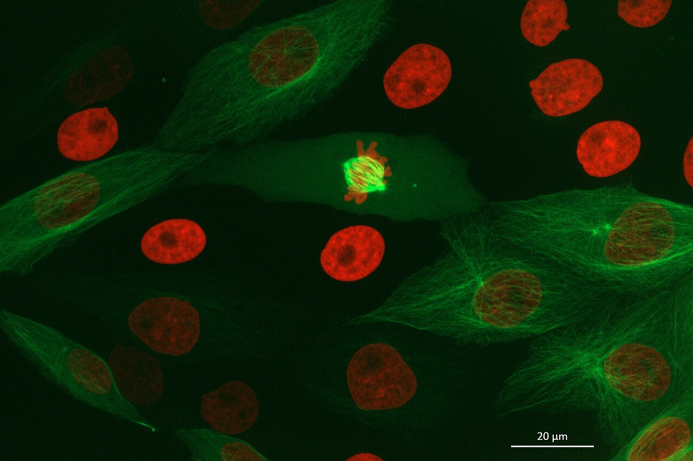
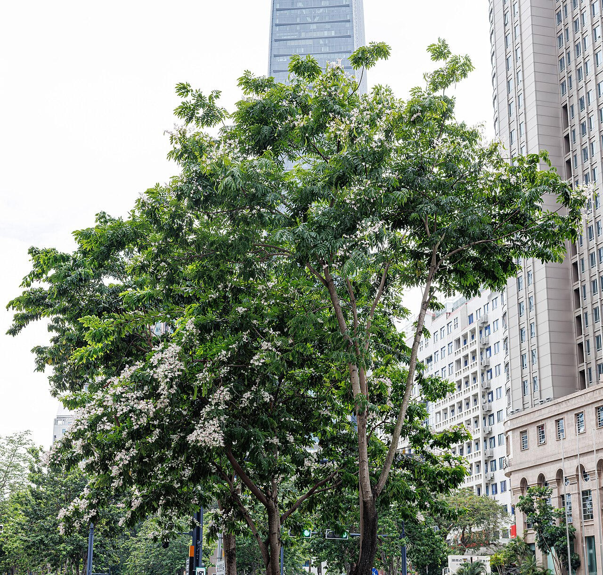
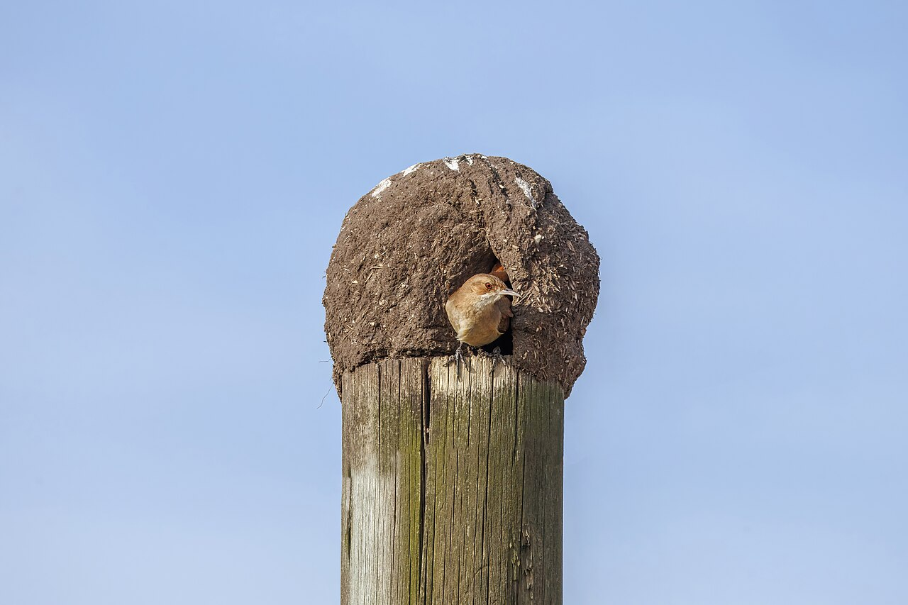

Lula.
diario de la mañana — el mundo, tu ciudad y lo que te asombra
Buen día. Viernes de 15° a 23°, con tormentas temprano y mejora después: si salís a la tarde, zafás. Hoy cierra la COP17 y se sabrá si hubo acuerdo de plata o no. La ciencia es de ciclo celular puro, de esas que te sirven para un final: una enzima que todos creíamos que solo frenaba, apagando el freno de al lado para que la célula arranque. Y es 30 de octubre: hace cuarenta y tres años se votaba el fin de la dictadura.
- El mundo en cinco minutos3'
- Argentina y Buenos Aires2'
- Ciencia: la decisión de dividirse7'
- Mirá a tu alrededor2'
- Receta de estación2'
- La palabra del día1'
- Le français du matin2'
- English corner3'
- Viernes de música: Serú Girán4'
- Hoy en la historia · un lugar2'
- Lo que me asombra hoy1'
- Pasatiempo: sudoku medio12'
- Cuaderno: repaso, quiz y escritura4'
Cierra la COP17 y la plata sigue sin aparecer
La cumbre de biodiversidad de Ereván termina hoy. Hasta anteayer llevaba 14 decisiones adoptadas y algo más de 1.800 millones de dólares en compromisos, una cifra que suena grande y es chica: el marco de Kunming-Montreal habla de 200.000 millones por año. El nudo es el de siempre y no se desató: quién aporta, cuánto, y si los subsidios que dañan la biodiversidad —pesca, combustibles, agro— se recortan o solo se mencionan. Lo que sí quedó sobre la mesa es el «camino de Ereván», un documento de prioridades medibles para los próximos dos años.
Por qué importa: porque la primera revisión global del marco era justamente esta, y revisar sin financiar es escribir una lista de buenas intenciones por segunda vez. Para la Argentina no es abstracto: el Fondo de Cali, que reparte plata de quienes usan información genética de la naturaleza, es exactamente el tipo de mecanismo que puede llegarle a un país con mucha biodiversidad y poco presupuesto.
Y en el resto del mundo
En breve: los cancilleres del G20 se reúnen hoy y mañana en Atlanta. Eurostat publica hoy el desempleo de septiembre y la primera estimación del PIB del tercer trimestre de la eurozona, y Francia difunde su inflación de octubre: dos números que van a mandar sobre el euro. Suiza reabre su oficina diplomática en Pionyang, cerrada desde la pandemia. Y en Ucrania, un bombardeo ruso sobre una estación de tren en Dnipro dejó catorce muertos, entre ellos un chico de once años.
El riesgo país aflojó, pero la contradicción sigue ahí
Después de tres ruedas en baja, ayer el mercado respiró: el riesgo país recortó cerca de un 3 % y los dólares financieros cedieron. El oficial sigue en el Banco Nación a $1.510 / $1.560, el blue cerca de $1.545 / $1.565, el MEP alrededor de $1.560 y el contado con liquidación por encima de $1.640.
El informe que más circuló en la City pone el dedo en la llaga: un peso fuerte y un riesgo país alto son difíciles de sostener a la vez. Un dólar barato solo cierra si el país puede volver a financiarse afuera, y eso es justamente lo que un riesgo país de 700 y pico vuelve carísimo.
El contexto que casi no se menciona: el bono del Tesoro de Estados Unidos a diez años volvió a acercarse al 5 %. Esa es la tasa «libre de riesgo» contra la que se mide todo lo demás: si sube, cualquier deuda emergente tiene que ofrecer más para competir, y el riesgo país argentino sube aunque acá no haya pasado nada.
Para hacer en la ciudad
- Hoy abre arteBA en La Rural, hasta el domingo 1 de noviembre.
- Mañana cierra octubre: en Lula sale «Tu mes en Lula», el repaso del mes con tu herbario, tus palabras y tus números.
La enzima que todos creíamos un freno resultó ser la que suelta el freno
De qué estamos hablando: una célula en G1 tiene que tomar una decisión —dividirse o no— y, una vez tomada, no vuelve atrás. El guardián de esa puerta es un complejo llamado APC/CCDH1, que mientras esté prendido va degradando, una por una, las proteínas que hacen falta para entrar en fase S. Para arrancar la replicación del ADN hay que apagarlo. Este trabajo de Nature muestra quién lo apaga, y la respuesta es una enzima que en todos los apuntes figura como lo contrario: un freno del ciclo.

Quién es quién
- APC/C: el complejo promotor de la anafase, una ubiquitina ligasa E3. Marca proteínas con ubiquitina para que el proteasoma las destruya. No es un interruptor: es una trituradora con lista de tareas.
- CDH1 (también FZR1): la proteína que le dice a APC/C a quién triturar durante G1. APC/CCDH1 es la forma activa en esa etapa, y mantiene bajas a las ciclinas, de modo que la célula no pueda avanzar.
- WEE1: una quinasa conocidísima, y conocida por otra cosa: fosforila a CDK1 en un residuo inhibidor y así impide que la célula entre en mitosis antes de tiempo. Todo el mundo la tiene fichada como freno de G2/M.
- Fase S: la etapa en que se replica el ADN. Entrar en S es el punto de no retorno del ciclo.
- Inhibidores de WEE1 (como adavosertib): drogas en ensayos clínicos oncológicos. La idea es sacarle a la célula tumoral el freno de G2/M para que entre en mitosis con el ADN roto y muera.
Qué encontraron
- WEE1 fosforila a CDH1, y esa fosforilación le debilita la unión a APC/C. O sea: WEE1 inhibe a APC/CCDH1 y, al hacerlo, habilita la entrada en fase S. La misma enzima que frena la salida de G2 destraba la salida de G1.
- Modelado más experimento. Armaron modelos de ecuaciones diferenciales con distintos supuestos —uno donde todo depende de un umbral de CDK2 y otro donde WEE1 actúa de forma independiente— y los dos predicen cosas distintas al inhibir WEE1. Los datos acompañaron al segundo.
- Y la consecuencia clínica: si WEE1 también hace esto, entonces un inhibidor de WEE1 no solo saca el freno de mitosis; además deja a APC/CCDH1 prendido más tiempo en células sanas. Eso podría explicar parte de la toxicidad que viene limitando estas drogas en los ensayos.
Lectura crítica
- Es cultivo celular. Líneas celulares, buena resolución temporal, nada de organismo entero. Lo que vale es el mecanismo; la relevancia en tejido hay que mostrarla aparte.
- Cuidado con la inhibición farmacológica: los inhibidores de quinasas casi nunca son limpios. Cuando el experimento clave es «le pongo la droga y pasa esto», la pregunta obligada es si pasa lo mismo con un mutante que no se puede fosforilar.
- Yo no vi las figuras: trabajé con el resumen y con el comentario de News & Views de la misma revista.
La conexión con lo que estudiás
Esto es el corazón de biología celular y el ejemplo perfecto de por qué conviene desconfiar de los esquemas de flechas: en el apunte, WEE1 tiene una sola flecha, hacia abajo, en G2/M. Acá aparece con una segunda función en otro momento del ciclo y en sentido contrario, y nadie la había visto porque nadie la había buscado ahí. Del lado aplicado: si el mecanismo de una droga tiene una rama más, sus efectos adversos dejan de ser «inespecíficos» y pasan a tener nombre, que es el primer paso para esquivarlos.
«WEE1 opposes APC/CCDH1 activity to promote S phase entry». Vuillemenot y col., Nature, 21 de octubre de 2026, doi:10.1038/s41586-026-11188-x · comentario: «An unexpected function of a cell-cycle enzyme…»
Biotec en el mundo real · mAbxience, en Garín
Si el tema es oncología, acá hay una planta argentina que fabrica anticuerpos monoclonales biosimilares y los exporta: mAbxience, en Garín, provincia de Buenos Aires.
- Qué es un biosimilar: no es un genérico. Un genérico es la misma molécula química; un anticuerpo son 150 kDa de proteína glicosilada producida por células vivas, y dos fabricantes nunca obtienen exactamente lo mismo. «Biosimilar» quiere decir que se demostró, con un paquete enorme de datos analíticos y clínicos, que las diferencias no tienen consecuencia.
- Cómo se hace: células CHO (de ovario de hámster chino) transfectadas con el gen del anticuerpo, cultivadas en biorreactores de miles de litros en fed-batch o perfusión; después, captura por cromatografía de afinidad con proteína A, pulido, inactivación viral y formulación.
- Dónde está el trabajo fino: en la glicosilación. El patrón de azúcares depende del pH, la temperatura y los nutrientes del cultivo, y cambia la vida media del anticuerpo y su capacidad de reclutar células inmunes: buena parte del esfuerzo es que quede dentro del rango del original.
- Salida laboral: upstream y downstream processing, caracterización analítica (espectrometría de masas, cromatografía), aseguramiento de calidad y asuntos regulatorios bajo GMP.
Ciencia en la vida cotidiana · Por qué la quimio te hace perder el pelo
Porque casi toda la quimioterapia clásica apunta a lo mismo: células que se dividen rápido. El tumor lo hace, pero también la matriz del folículo piloso, el epitelio del intestino y la médula ósea, y esos tres son los que pagan la cuenta: alopecia, mucositis y caída de glóbulos y plaquetas. No es un efecto colateral raro, es el mecanismo funcionando donde no queremos.
El dato que sirve: por eso toda la oncología de los últimos treinta años busca otra diferencia además de la velocidad: un receptor mutado, una vía de reparación rota, un antígeno de superficie. Las drogas del trabajo de hoy son justamente de ese tipo —apuntan a un punto de control que la célula tumoral ya tiene dañado—, y la toxicidad que todavía aparece es la señal de que el blanco no era tan exclusivo como se pensaba.
El paraíso, que se huele antes de verse, y el hornero



_at_nest_Colonia.jpg){kind=link}
El árbol: paraíso
| Nombre científico | Melia azedarach (Meliáceas, la familia de la caoba). Viene del sudeste asiático; acá se naturalizó tanto que aparece solo en cualquier terreno baldío. |
|---|---|
| Cómo reconocerlo | Primero por el olor: flores lilas muy chiquitas, en panojas, con un perfume dulce y penetrante que se siente a media cuadra. Hoja bipinnada con folíolos dentados, y después unas bolitas amarillas que quedan todo el invierno en el árbol pelado. |
| El dato que importa | Esas bolitas son tóxicas: contienen meliatoxinas, limonoides que afectan el sistema nervioso y digestivo. Para los chicos y los perros son un problema real; para los zorzales, en cambio, son comida de invierno. La misma planta, dosis y metabolismo distintos. |
El ave: hornero
| Nombre científico | Furnarius rufus (Furnáridos). Ave nacional argentina desde 1928, elegida por votación en las escuelas. |
|---|---|
| Cómo reconocerlo | Pardo rojizo, pecho claro, pico fino y recto, y esa manera de caminar por el pasto dando pasos cortos, muy erguido. Canta a dúo con la pareja, los dos a la vez, en una especie de carcajada. |
| Lo asombroso | El nido: unos dos kilos de barro mezclado con pasto y bosta, construido en tres a cinco semanas, con una entrada lateral y un tabique interno que forma un pasillo en espiral hasta la cámara. Ese tabique es lo que impide que un depredador meta la mano desde afuera. Y no lo reutilizan: hacen uno nuevo cada año, y el viejo lo heredan golondrinas, gorriones y tordos. |
Frutillas maceradas con crema batida de verdad
Quince minutos, y la frutilla está en su mejor momento del año.
Ingredientes
- 500 g de frutillas
- 2 cucharadas de azúcar
- Jugo de medio limón o una cucharada de vinagre balsámico
- 200 ml de crema de leche bien fría (35 % de grasa)
- 1 cucharada de azúcar impalpable, unas hojas de menta
Pasos
- Cortá las frutillas en mitades, mezclalas con el azúcar y el limón y dejalas 20 minutos.
- Enfriá el bol y las varillas en el freezer 10 minutos.
- Batí la crema con el azúcar impalpable hasta picos blandos: cuando levantás la varilla, la punta se dobla.
- Servir la fruta con su jugo y la crema al lado. Menta arriba.
La química de la receta
Por qué la frutilla suelta jugo: por ósmosis. El azúcar afuera crea un medio más concentrado que el interior de la célula, el agua sale para igualar, y con ella salen los compuestos de aroma y las antocianinas que le dan el color. Ese jugo oscuro no es un descarte: es la mitad del postre.
Por qué la crema tiene que estar helada: batir crema es hacer una espuma estabilizada por grasa parcialmente cristalizada. Las varillas incorporan burbujas de aire; los glóbulos de grasa, si están sólidos por el frío, se rompen parcialmente y se sueldan entre sí alrededor de las burbujas, formando una red que las sostiene. A temperatura ambiente la grasa está líquida, no cristaliza, y la crema no levanta o se convierte directamente en manteca.
Y el ácido: las antocianinas de la frutilla son indicadores de pH. En medio ácido —limón, balsámico— viran al rojo más vivo; sin ácido, con el tiempo, tiran a violáceo apagado. Una cucharada de limón no es sabor nada más: es color.
ritmo sustantivo
griego rheîn (fluir) → rhythmós (forma del movimiento, proporción) → latín rhythmus → castellano ritmo · francés rythme · inglés rhythm
Para los griegos, rhythmós no era golpear un tambor: era la forma que toma algo que fluye. La misma raíz de «reología», la ciencia de cómo se deforman los materiales. Se usaba para la arquitectura y para la escultura tanto como para la música, y lo que nombraba era la proporción entre las partes de algo en movimiento. Recién después se estrechó hasta significar, sobre todo, la organización del tiempo en el sonido.
En biología recuperó el sentido ancho. Un ritmo circadiano no es un pulso impuesto desde afuera: es la forma que toma un flujo de proteínas que se fabrican y se degradan. El ciclo celular es otro, con sus tiempos fuertes y sus silencios. Es raro que la misma palabra sirva para Charly y para APC/C, y es el mismo concepto: algo que fluye y, al fluir, adopta una forma reconocible.
Un ticket, s'il vous plaît
— Bonjour, un ticket, s'il vous plaît.
— Voilà. Deux euros dix.
— Le bus pour la gare, c'est ici ?
— Non, c'est en face.
| un ticket | un boleto [an ti-KE] |
|---|---|
| la gare | la estación de tren [la GAR] |
| c'est ici ? | ¿es acá? [se-ti-SÍ] |
| en face | enfrente [an FAS] |
Un truco
Tres palabras que se confunden siempre: la gare es la estación de tren, la station es la de subte o de colectivo, y l'arrêt es la parada. Y el s'il vous plaît no es opcional: en francés, pedir algo sin él —aunque digas «bonjour»— suena a orden. Agregalo siempre, aunque te salga mecánico; es más grave omitirlo que pronunciarlo mal.
Singing in code
Censorship, oddly, tends to improve metaphors. When a songwriter cannot name the thing, the thing has to be smuggled in through something else — a nursery rhyme, a children's book, a landscape — and the smuggling is what gives the song its afterlife. Audiences living under the same constraint hear the second meaning instantly; the censor, reading literally, finds only a girl and a rabbit.
That asymmetry is the whole trick. A ban requires someone to put in writing what is being banned and why, which is itself an admission. A song that says nothing actionable forces the authorities into the absurd position of having to explain the allegory in order to prosecute it, and explanations of that sort travel badly. Some of the most pointed protest music of the twentieth century was never formally forbidden at all, for precisely that reason.
- to smuggle something in — pasar algo de contrabando
- afterlife — vida posterior, lo que le queda después
- a constraint — una restricción
- actionable — que da pie a una acción legal, denunciable
- to travel badly — no funcionar fuera de su contexto
- pointed — filoso, dirigido a alguien
«Canción de Alicia en el país»: cómo decirlo todo sin nombrar nada
Está en Bicicleta, el disco que Serú Girán publicó en 1980: Charly García, David Lebón, Pedro Aznar y Oscar Moro, en plena dictadura. La letra reescribe Alicia en el país de las maravillas y no nombra nada de lo que está hablando. «No cuentes lo que viste en los jardines, el sueño acabó». «Se acabó ese juego que te hacía feliz». Y el verso que todo el mundo recita: «Enciende los candiles, que los brujos piensan al revés».
Qué escuchar, concretamente
- La entrada: arranca sola, casi recitada, con la voz adelante y el arreglo atrás. Recién cuando la letra se vuelve explícita el arreglo crece. La canción está construida para que entiendas antes de que te lo digan.
- El bajo de Pedro Aznar, que tenía 20 años. No acompaña: contesta. Escuchá solamente el bajo una vez entera y vas a escuchar una segunda melodía.
- La banda como grupo de jazz: Serú venía de la fusión, con arreglos vocales a cuatro voces y armonías que no eran las del rock de la época. Esa sofisticación es parte del mensaje.
- El final abierto: no resuelve en una conclusión ni en un grito. Se apaga. En 1980 eso también quería decir algo.
La historia detrás
La canción es anterior al disco: Charly la escribió a mediados de los setenta, según la versión más difundida a pedido del director Eduardo Plá para su película sobre Alicia, y la primera grabación la cantó Raúl Porchetto. Las fuentes no coinciden en el año exacto, así que tomá esa parte con pinzas. Lo que sí está claro es lo otro: la versión de Serú Girán de 1980 fue un éxito enorme, sonó en la radio, y no fue prohibida, a pesar de que habla de censura y de violencia política. Esa es la paradoja interesante: para prohibirla había que explicarla, y explicarla era admitirla.
La metáfora no es decoración: en una dictadura, es infraestructura.
30 de octubre de 1983: se vota, después de siete años
Hace cuarenta y tres años exactos, la Argentina votó por primera vez desde 1973. Ganó Raúl Alfonsín con poco más del 51 % de los votos, en la primera derrota del peronismo en una elección presidencial libre. Hubo una participación altísima —más del 85 % del padrón— y una imagen que quedó: filas de cuadras enteras en las escuelas, gente que votaba por primera vez a los treinta años.
Lo que vino después no fue fácil —la deuda, la hiperinflación, los levantamientos militares—, pero desde ese día hasta hoy, con todas las crisis, no hubo otro golpe: es el período democrático más largo de la historia argentina.
Alfonsín cerraba sus actos recitando el preámbulo de la Constitución. Sonaba a gesto escolar y era otra cosa: era leer en voz alta un texto que durante siete años no había significado nada.
El lugar: Plaza de Mayo
| Dónde | Entre la Casa Rosada, el Cabildo y la Catedral. Es el lugar donde terminan, desde 1810, todas las frases de la política argentina. |
|---|---|
| Qué pasó ahí | El 10 de diciembre de 1983, en la asunción, la plaza se llenó. Y desde 1977, cada jueves, las Madres dan vueltas alrededor de la Pirámide de Mayo: empezaron caminando porque estaba prohibido reunirse, y entonces no se reunían, caminaban. |
| Y hoy | Sigue siendo el termómetro. Cualquier cosa importante que pase en el país, en algún momento, pasa por esas baldosas. |
Tus células deciden dividirse horas antes, y la decisión no tiene vuelta atrás
En 1974, Arthur Pardee describió algo que suena filosófico y es medible: existe un momento en G1, el punto de restricción, a partir del cual la célula ya no necesita el estímulo externo que la empujaba. Antes de ese punto, si le sacás los factores de crecimiento, se detiene y espera. Después, aunque le saques todo, completa el ciclo entero igual: replica su ADN, se divide, termina. Es un compromiso irreversible tomado horas antes de que algo se vea en el microscopio.
Lo que lo hace irreversible es, en el fondo, una cuestión de diseño. El sistema está armado con retroalimentación positiva: la ciclina E activa a CDK2, CDK2 fosforila a Rb, Rb suelta a E2F, y E2F manda a fabricar más ciclina E. Una vez que ese bucle arranca, se sostiene solo. Y el complejo que lo mantenía apagado hasta ese momento es justamente el APC/CCDH1 del trabajo de hoy: la decisión, vista de cerca, es el instante en que una trituradora deja de triturar.
Me asombra que la biología resuelva con química lo que nosotros no resolvemos nunca: cómo dejar de deliberar. La célula cruza una línea y se vuelve sorda a lo que venga después.
El del viernes
Repaso y quiz de la mañana
Repaso de idiomas
Quiz
¿Qué hace APC/CCDH1 en G1?
El hallazgo del trabajo de hoy es que WEE1…
¿Por qué importa clínicamente?
¿Por qué la crema tiene que estar muy fría para batirla?
«Ritmo» viene de una raíz que significa…
El nido del hornero tiene un tabique interno porque…
El 30 de octubre de 1983…
Escritura
- Quiz: degrada proteínas y frena · fosforila a CDH1 y habilita S · explica la toxicidad · la grasa cristalizada · fluir · impide llegar a la cámara · se votó por primera vez desde 1973.
- Repaso: où est la station de métro ? · tout droit · un ticket, s'il vous plaît · en face · una advertencia o reparo · lidiar con · pasar de contrabando.
- Francés: por ejemplo, «Bonjour, deux tickets, s'il vous plaît. Le bus pour la gare, c'est ici ?»
Sudoku:
Fuentes de esta edición
- Mundo: Xinhua: la COP17 en su última etapa · The Climate Watch: financiación y subsidios · Agenda de EFE del 30 de octubre
- Mercados: Ámbito: el dólar hoy · Infobae: dólar bajo y riesgo país alto
- Clima: La Nación, con datos del SMN
- Ciencia: Nature: WEE1 y APC/CCDH1 · el comentario de News & Views · mAbxience
- Música e historia: Bicicleta (1980), Serú Girán · Britannica: Raúl Alfonsín
Mañana, sábado: cierra octubre y va «Tu mes en Lula». — Lula.